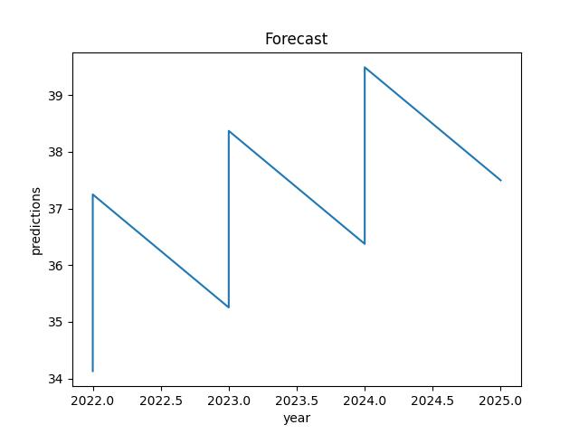
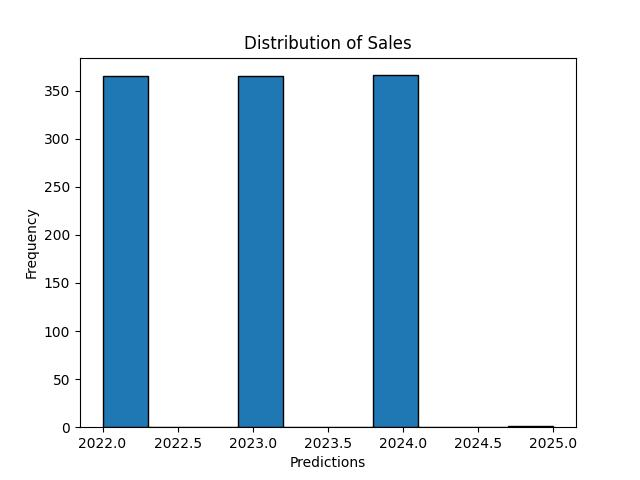
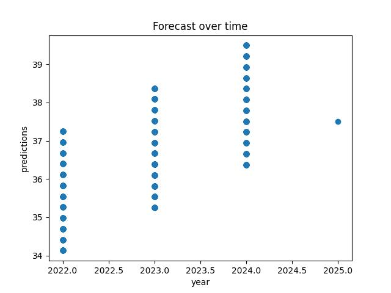
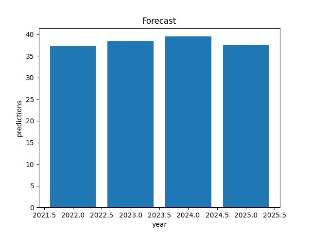
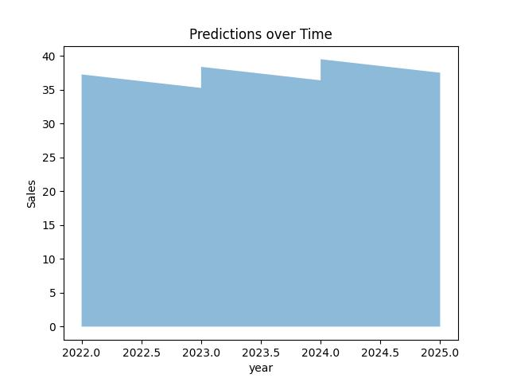

Line Chart
>Visualize the data
>Predictions display the upward trend of future sales of Antibiotics

Histogram
>The Histogram displays the data and its weight which has been used to display or forecast

Scatter Plot
>The Scatter plot gives a more detailed view.
>It shows the gradual increase in the sales prices.
>It also shows the downward and upward trend towards the end of ever year.

Bar Chart
>The bar Chart displays the peaks through every Period
>Identify the highest sale in the requested period

Area map
>Its an area map
>Mapping the predictions and dates
